Destination Guide
Everything you need to know about Africa's greatest wildlife spectacle
Ready to witness one of the wildest shows on Earth? The Great Migration is your ticket to nature's most epic road trip. Over a million wildebeest, along with zebras and gazelles, journey across Tanzania and Kenya, making it one of the last massive wildlife migrations on the planet.
This guide covers everything you need to plan your trip: the best times to go, where to stay, what to expect month by month, and practical tips from our safari specialists who have spent decades following the herds.
Two million animals on a circular journey
The Great Migration is the annual movement of millions of wildebeest, along with hundreds of thousands of zebras and gazelles, across the Serengeti-Mara ecosystem in East Africa. These animals travel in a continuous cycle through Tanzania's Serengeti National Park and Kenya's Masai Mara National Reserve, driven by the need to find fresh grazing land and water.
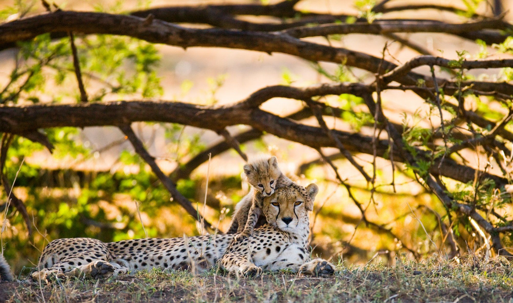
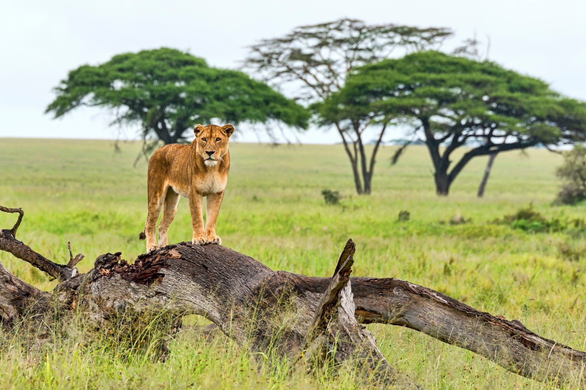
Spanning nearly 2,000 miles, the migration is considered one of the greatest wildlife spectacles on Earth. It involves dramatic river crossings, where the animals face dangerous predators like crocodiles and intense predator-prey interactions with lions, hyenas, and cheetahs along the way. The sheer scale defies comprehension — columns of wildebeest can stretch for kilometres, their hooves kicking up dust clouds visible from the air.
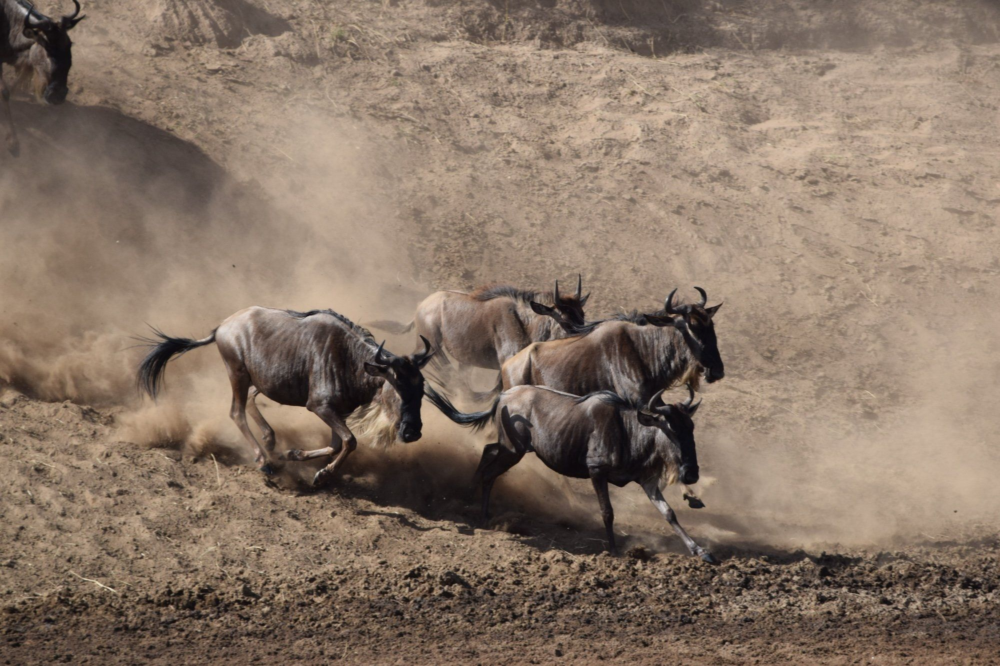
A year-round cycle with no beginning or end
A lot of people think the Great Migration only happens between July and October, during the famous river crossings, but that's just one part of the story. The migration is actually a year-round event, constantly moving through different stages across the Serengeti and Masai Mara.
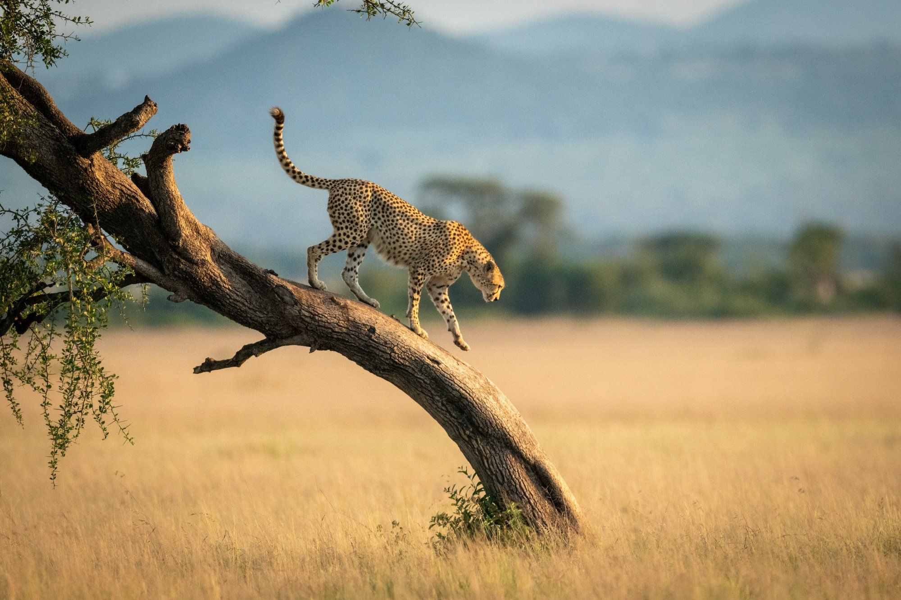
The calving season, another extraordinary chapter, takes place from late January through March in the southern Serengeti. During this period, around 8,000 calves are born each day, creating an abundance of new life — and an irresistible draw for predators. Because the migration follows the rains rather than a calendar, the timing can shift from year to year, which is why experienced guides monitor conditions closely.
Plan for more time rather than a quick in-and-out trip, as the herds move based on when and where the rain falls.
Where the herds are and when
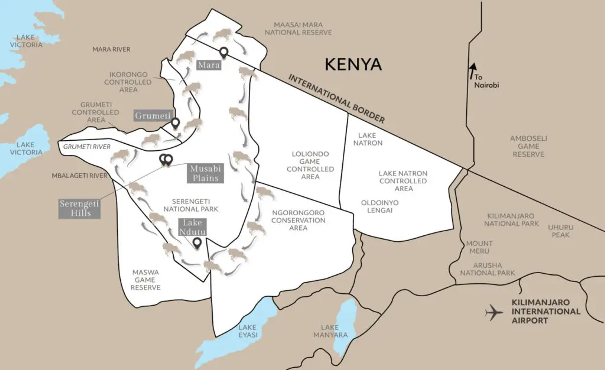
Southern Serengeti & Ndutu. Calving season is in full swing — around 8,000 wildebeest are born each day. The nutrient-rich volcanic plains support lactating females, and the density of predator action is extraordinary.
Calving SeasonThe long rains begin, pushing the herds westward and northward. The landscape transforms from golden brown to vivid green. Columns of animals begin to form as the migration gathers momentum.
Green SeasonWestern Corridor of the Serengeti. The first major river crossings of the Grumeti River occur — smaller in scale than the Mara crossings but equally intense. Far fewer vehicles than peak season.
River CrossingsNorthern Serengeti & Masai Mara. The iconic Mara River crossings — with their chaos, bravery, and heartbreak — take place during this window. Peak season with the highest concentration of visitors.
Peak CrossingsLate crossings continue in the Masai Mara. The herds begin their gradual return south as the short rains approach. Excellent game viewing with slightly fewer visitors than July–August.
Return SouthEastern Serengeti. The short rains arrive, drawing the herds back towards the southern plains. The cycle begins anew as the animals filter south to complete the loop.
Short RainsIt depends on what you want to see
The best time depends on what you want to experience. Each phase of the migration offers something unique, from the tenderness of the calving season to the raw intensity of the river crossings.
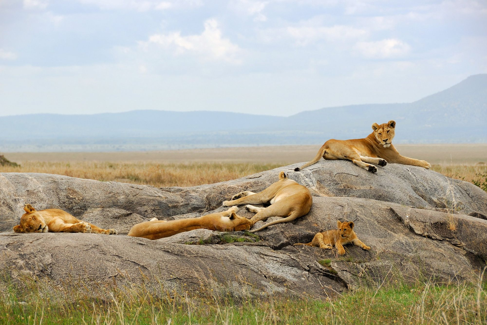
From permanent lodges to mobile camps
Accommodation in the Serengeti and Masai Mara ranges from luxury permanent lodges to seasonal tented camps that move with the herds. The choice between fixed and mobile determines not just your comfort level, but your proximity to the action.
Permanent lodges offer consistent quality, established infrastructure, and often spectacular locations overlooking key geographic features. Many have been positioned for decades at strategic points along the migration route, with deep knowledge of local wildlife patterns.
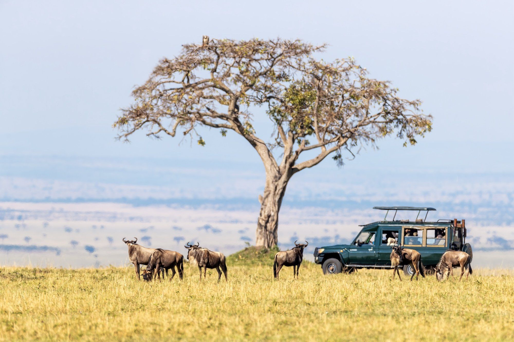
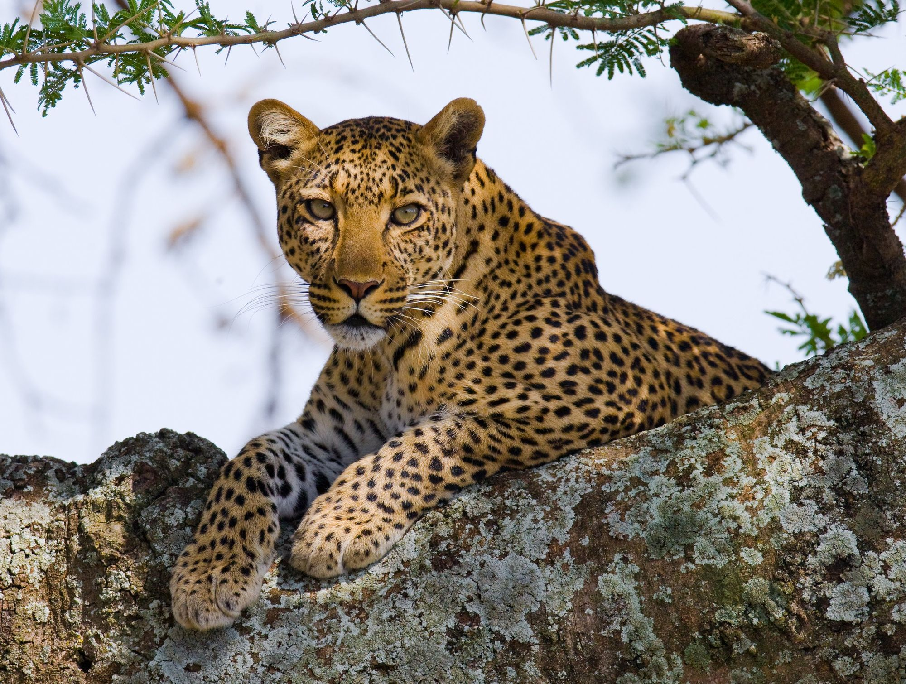
Mobile camps are a particularly compelling option — they reposition seasonally along the migration route so that you are always close to the action, typically within a short game drive of the herds. The experience is more intimate and immersive than a permanent lodge.
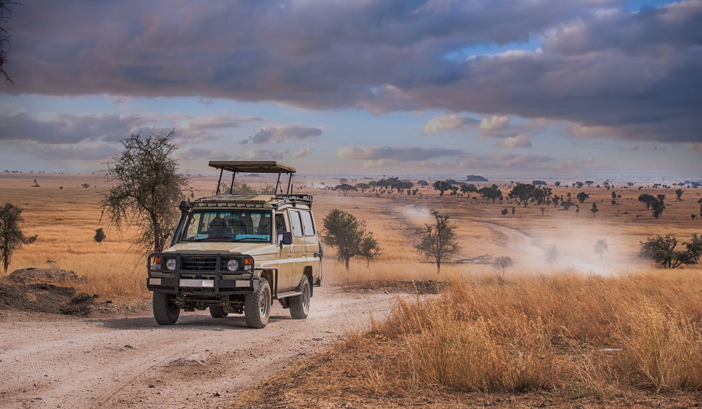
The best camps often fill up 12 to 18 months ahead, particularly for July and August departures.
Six things we wish every traveller knew
Plan at least 12 months in advance for peak season camps. The best locations in the northern Serengeti and Masai Mara conservancies often fill 18 months ahead for July and August departures.
Choose your season based on what you want to see, not just popularity. The calving season in January and February offers extraordinary predator-prey drama with far fewer visitors than the July crossings.
The migration follows the rains, not a calendar. A willingness to adjust your dates — even by a week — can significantly improve your experience. Work with a specialist who monitors real-time conditions.
Combine vehicle safaris with walking safaris, hot air balloon flights, and boat-based experiences. Each perspective reveals a different facet of the ecosystem and the migration.
Ngorongoro Crater, Zanzibar, and Lake Manyara complement the Serengeti perfectly. A well-designed itinerary weaves the migration into a broader East African journey.
Binoculars, a telephoto lens, layers for cool mornings, and neutral-toned clothing. Dust protection for camera gear is essential on the open plains.
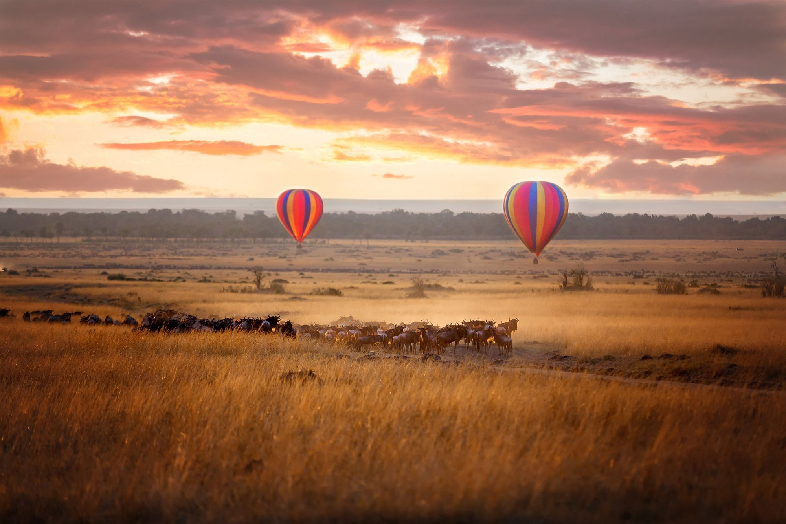
What travellers ask us most
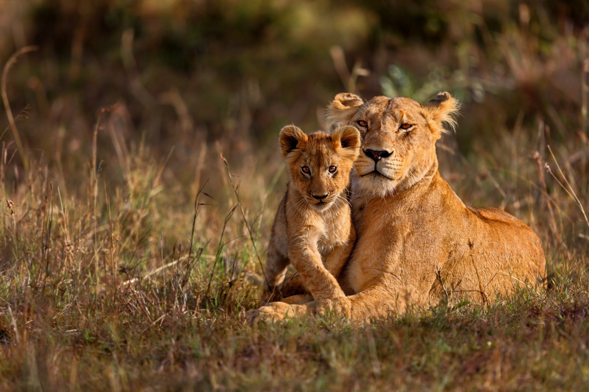
Ready to witness it yourself?
Our safari specialists have followed the herds for decades. Let us design an itinerary that puts you in the right place at the right time.
Speak to a SpecialistStay inspired
Expert guides, lodge reviews, and trip inspiration. Delivered every two weeks.
No spam. Unsubscribe anytime.